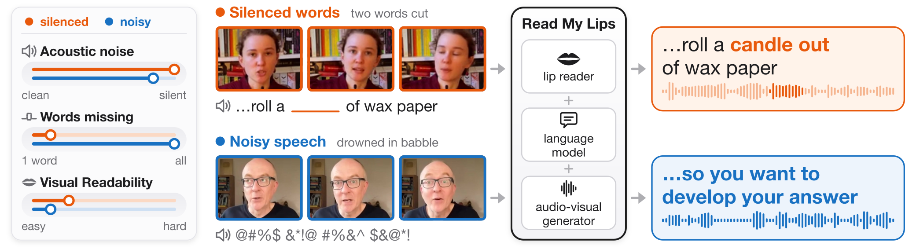
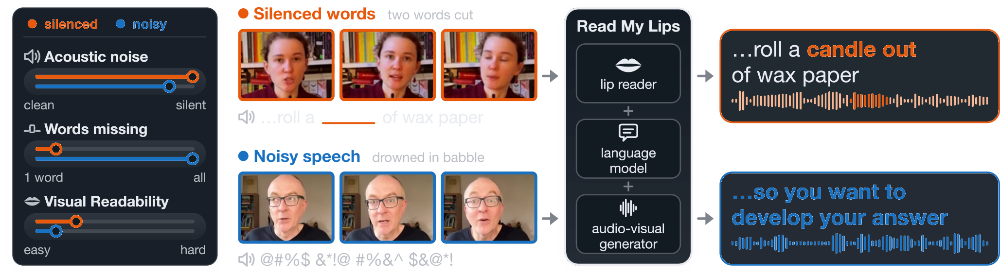
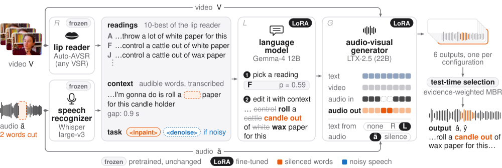
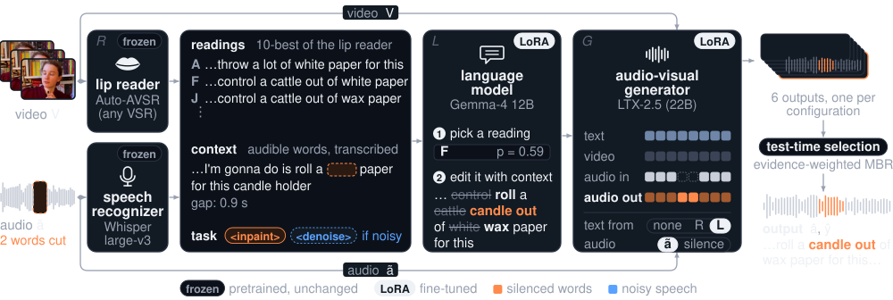

Lip reader
An off-the-shelf visual speech recognizer (Auto-AVSR) reads the whole clip and returns its N-best list. Lower-ranked readings often hold the right words even when the top one is wrong, so the full list is kept.


Real-world speech is often partially observable: audio may be missing or corrupted by noise and competing speakers, while the speaker's lips remain visible. Recovering speech requires combining what can be heard, seen, and inferred from context. We introduce RML (Read My Lips), a collaborative method combining a lip reader, a language model, and an audio-visual generative model. The lip reader provides articulation hypotheses, the language model uses context to resolve ambiguous or missing words, and the audio-visual generator reconstructs synchronized speech while preserving speaker identity. Since source reliability varies, RML generates multiple reconstructions and uses the available evidence to favor the most reliable ones. This allows RML to handle missing audio, strong interference, and poor visual evidence without manually defined thresholds. Quantitative and qualitative experiments across these conditions show the benefit of combining visual, acoustic, and linguistic signals.
Three models, each suited to one kind of evidence, talk to each other in plain text. Because the interfaces are text, any lip reader can be dropped in, including one for another language, without retraining the rest.


An off-the-shelf visual speech recognizer (Auto-AVSR) reads the whole clip and returns its N-best list. Lower-ranked readings often hold the right words even when the top one is wrong, so the full list is kept.
A fine-tuned Gemma reads the lip-reading hypotheses next to a transcript of what is still audible. It first names the closest reading, then rewrites the clip's transcript from it, using the context to settle what the lips leave ambiguous.
LTX-2.5 with LoRA adapters attends to the video, the input track and the text, and generates speech that is synchronized with the lips and keeps the speaker's voice. It was trained on fallible transcripts, so it treats the text as a strong but fallible hint.
Each configuration switches components on or off and optionally replaces the damaged audio with silence. Every output is transcribed, and the one with the lowest expected disagreement (minimum Bayes risk) against evidence-weighted voters is kept: the ear (Whisper) and the eye (the lip reader) decide how much each vote counts.
Each card plays one picture with three soundtracks: the original recording, the damaged input RML receives, and ours. Tap a transcript to switch; playback keeps its position, so you hear the same moment. Transcripts are Whisper large-v3’s reading of each track.
Film scenes are far from the talking-head videos RML was trained on: the lighting is staged, the camera moves, and the face is often turned away. On these clips the lip reader alone gets the damaged words wrong.
From one to ten consecutive words are cut from the audio. Spans never start or end with a stop word, so the missing words carry content.
Babble at −5, −10 or −20 dB over the whole clip or over a few words, a competing talker, and sound effects from classes that were or were not seen in training. RML is not told where the noise is or how strong it is.
The audio track is removed altogether. With nothing audible, RML speaks what it reads from the lips, in a voice that fits the face.
Speakers that were synthesized by a video generator, not filmed. These come from our hard test set.
The same clips through the closest prior systems. Pick a clip, then switch the soundtrack between methods. The picture stays the same, and each strip shows which words a method got right.
Babble 20 dB louder than the speech, over the whole clip. Clips 1–4 are where RML does best; clips 5–8, marked typical, sit at its median error, so they show what to expect on an average clip.
A competing talker, or sound effects, at −5 dB over the whole clip.
F5-TTS and AlignDiT receive our language model's transcript and the position of the span, which RML has to find on its own. LipVoicer synthesizes speech from the video alone.
RML does not know in advance whether to trust the audio, the lips or the context. It runs the pipeline in several configurations, transcribes every output, and keeps the one that disagrees least with the other readings, where each reading's vote is weighted by how much the clip's own audio and lips support it.
| Configuration | Transcript of its output | Ear | Eye | Vote | Risk |
|---|
Ear and eye are evidence in nats. Nested voters do not vote separately: the lip reader's transcript (and R → G on silence, which only speaks it) is already contained in L's input, which reads the lip reader's whole N-best list. Text-only rows vote but cannot be chosen, since they are not speech. Rows without a play button are outputs whose audio is not included on this page.
Every output is transcribed by Whisper large-v3 and scored against the reference, on videos never used for training. TalkVid is held out from the training source; VoxMM is a different source altogether.
The share of cuts in which every silenced word comes back exactly. The language model and the generator add to whatever lip reader they are given: with a stronger reader, RML is stronger too, with nothing retrained.
Speech editors that receive the same transcript, plus the position of the span, still recover fewer spans. Since the text is identical, the difference comes from the generator, which also sees the lips and hears the speech around the gap.
Word error rate over the whole window (lower is better). Audio-only enhancers cannot help once the babble is as loud as the speech, and generators that read only the lips throw away the speech that is still audible. RML uses both and has the lowest error on average.
The one exception is a competing talker, the case audio-visual separation is designed for, where VisualVoice and RML are statistically tied.
Side views, occluded mouths, animated characters and generated speakers. Lip readers largely fail here, so the audible context does most of the work: RML recovers about three times as many silenced spans as the lip reader it starts from, and nearly halves the error of noisy input.
* scored only on clips where the method's face preprocessing succeeds.
@article{razlighi2026readmylips,
title = {Read My Lips: Context-aware Lip Reading Using Language and Audio-Visual Models},
author = {Razlighi, Amir and Ning, Zhuo and Korem, Naomi Ken and Patel, Nisarg and
Chrysanthou, Yiorgos and Cohen-Or, Daniel and Mahdavi Amiri, Ali},
journal = {arXiv preprint arXiv:2611.33117},
year = {2026},
url = {https://arxiv.org/abs/2611.33117}
}